Bayflow Lab
Make Trade Flow
A self-improving AI Go-To-Market (sales and marketing) agent for small and mid-sized exporters in Hong Kong and the Greater Bay Area.
Sheng Gao · Founder · smggaosheng@gmail.com
The videos bring buyers.
The orders still depend on a few people.
Made with AI. No ad spend.
4 people sell. Every quote typed by hand.
The best salesperson's know-how stays in one head.
My family's factory in Shenzhen (a related party)
Start from the business that already works, then add AI.
The same team sells more
Little to learn: it lives in the tools they use
Bayflow's agent, added on top
Drafts replies and quotes, asks a person to approve
Already in the company
The owner's know-how The best salesperson's replies The tools the team uses
One flow: content, buyers, orders, payment.
Content
Marketing agent
Next
Buyers
Sales agent
Running today
Orders
Approval by a person beyond the range
Running today
Payment
Documents after the deal
Later
Today, on real WhatsApp: the agent translates, and drafts every reply and quote.
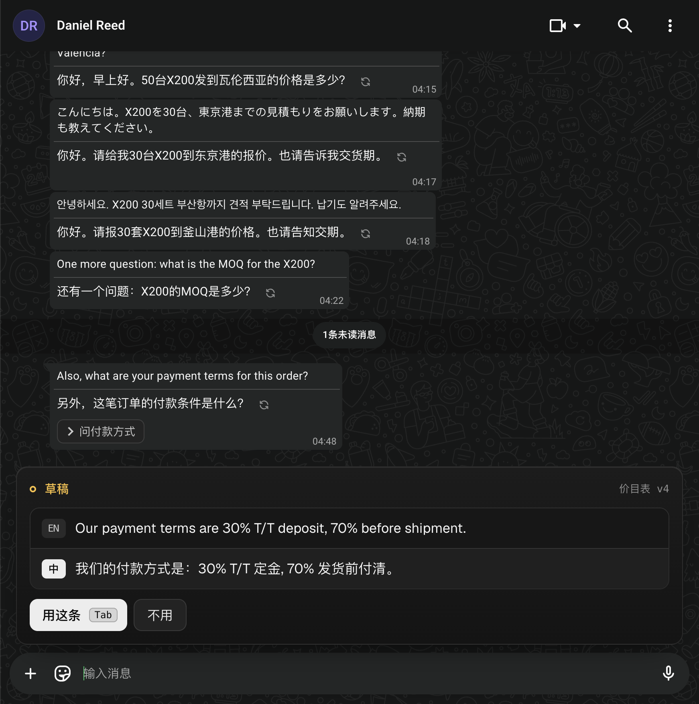
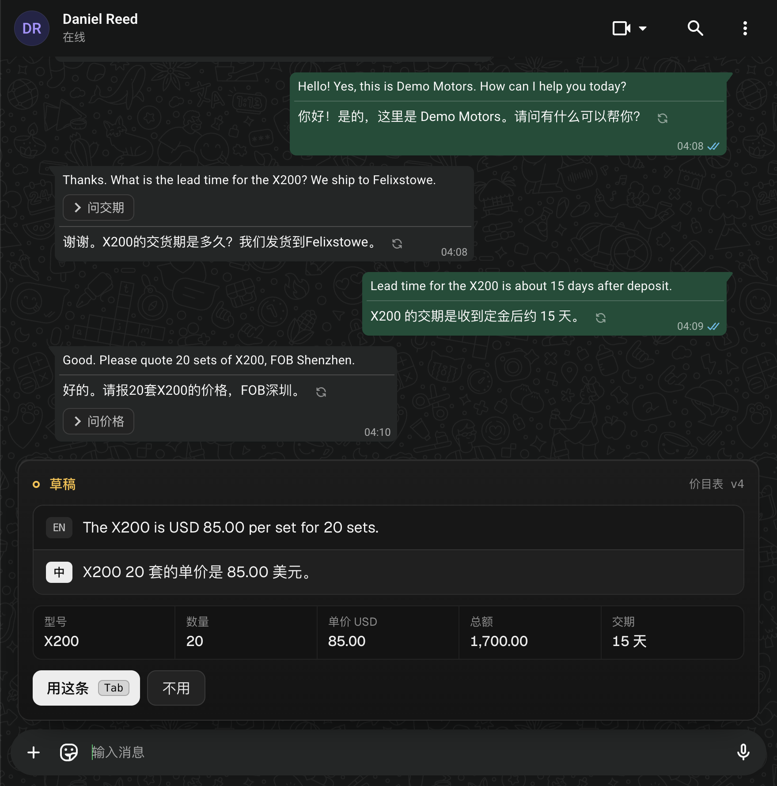
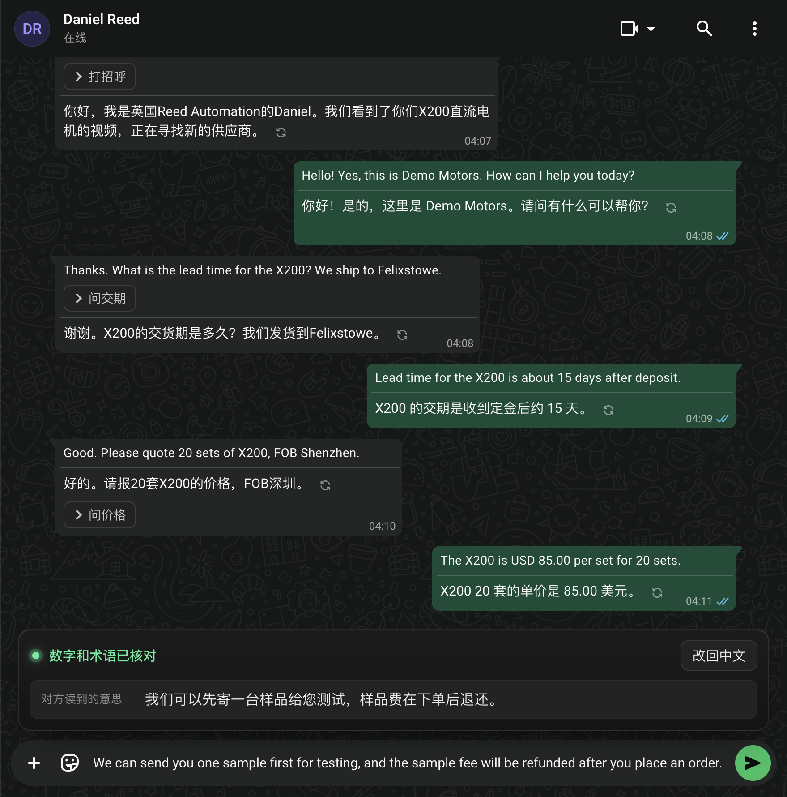
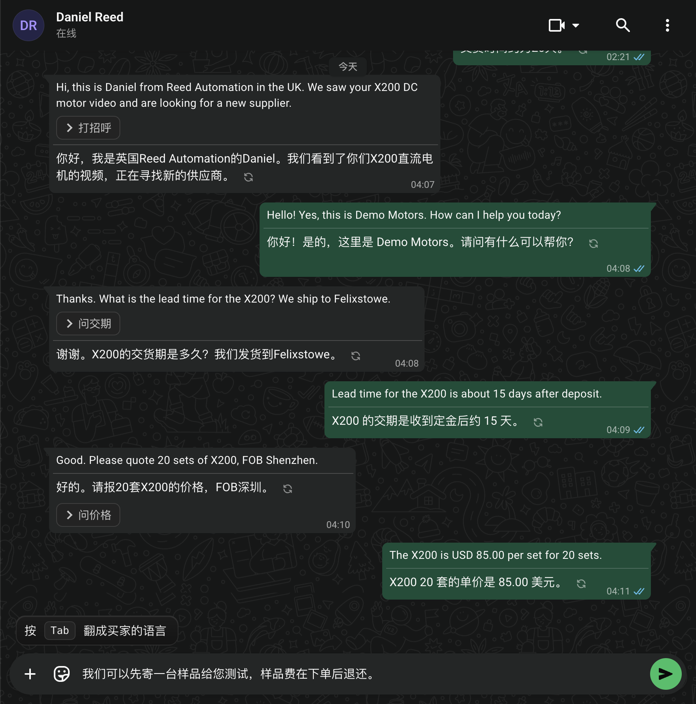
Every message, translated
under the original
Standard questions
a reply drafted from the company's documents
The quote
drafted by the model, every number filled in by code
Type Chinese, press Tab
the buyer's language
36
languages,
both ways
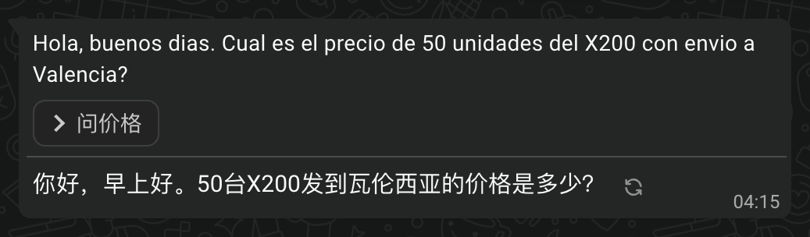
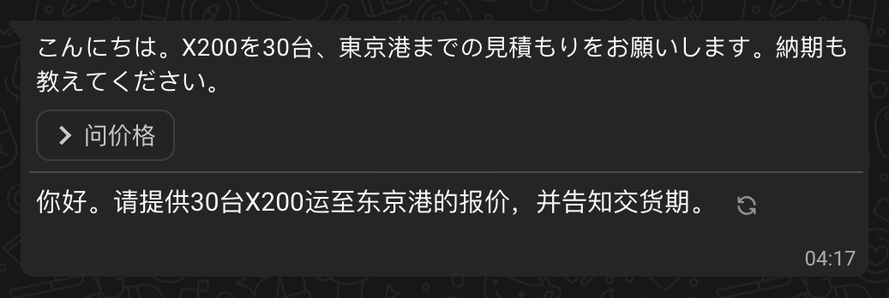
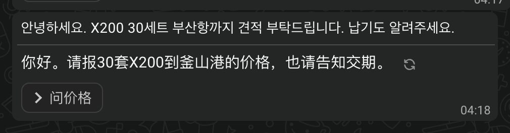
Beyond each salesperson's range, a person approves.
Salesperson's WhatsApp
Owner console
- 1The buyer asks for more than this salesperson may give
- 2The agent holds the buyer and writes the approval card
- 3The approver answers in one word
Ranges: quotes, discounts, lead times
Demo data
Owner's overviewDemo dataConcept
Next: what the best people do becomes how the whole team and the agent work.
Concept
Agent drafts
A person edits
or approves
Outcome recorded
Rules
updated
The company's own
playbook
An edited draft shapes the next drafts.
An approved exception becomes a rule.
Two numbers I will track:
- drafts the top salesperson sends unedited
- time for a new hire to handle orders alone
Next: the marketing agent makes the content, and records what brings buyers.
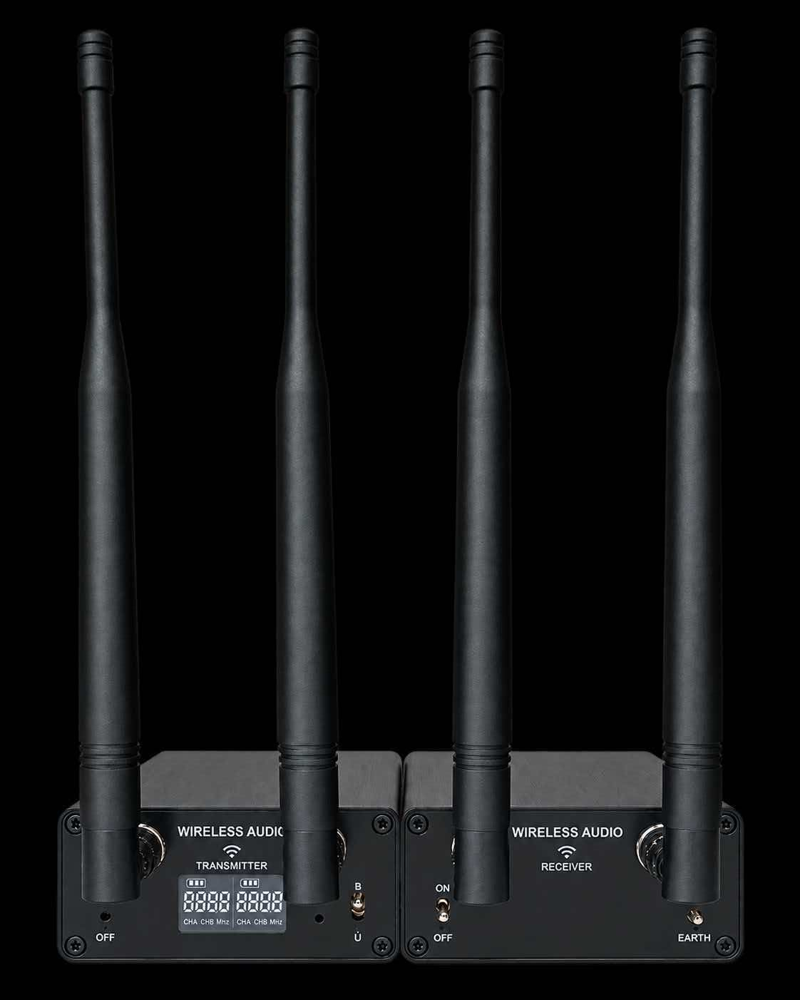
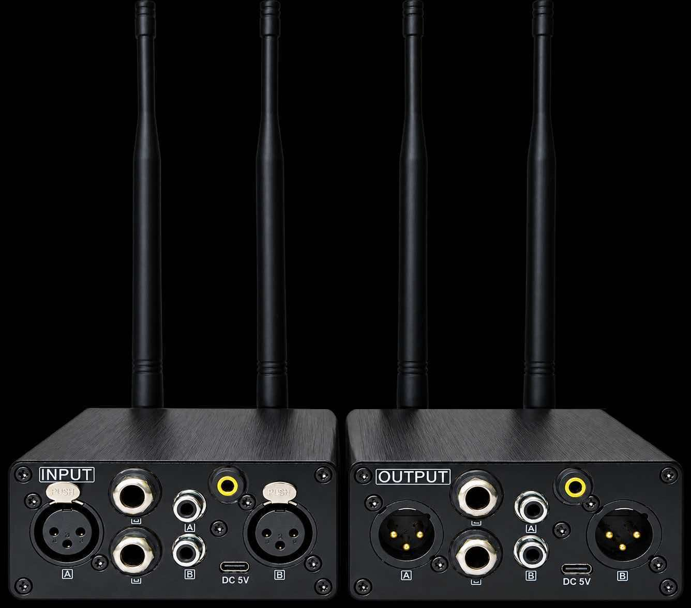
"Make a short Facebook video for this product. A foreign sound engineer holds it and explains how he uses it at work. In English."
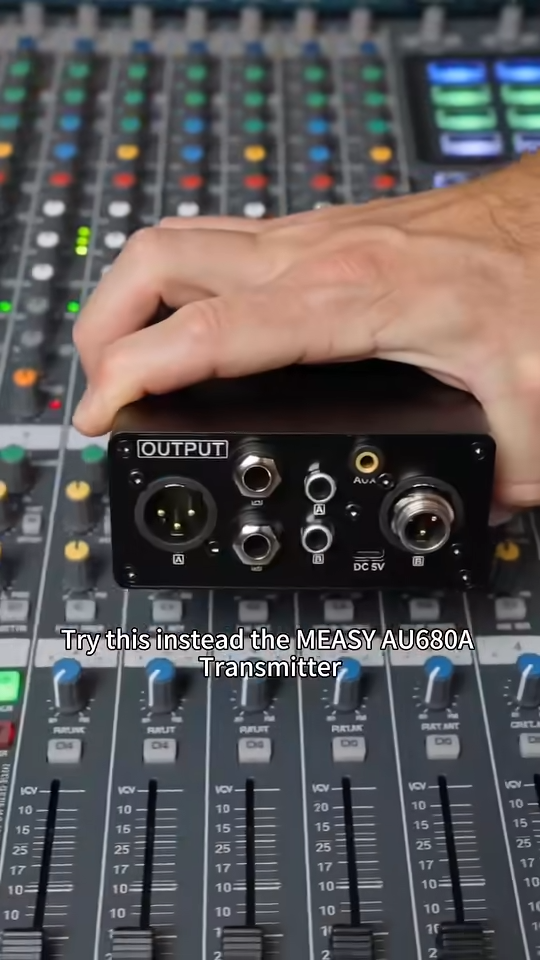
All made by AI
presenter captions title post text hashtags
2 product photos + one plain sentence → a finished product video, ready to post
1.12M
views
11K
likes
494
comments
579
shares
Posted on Facebook · Measy
Today: made with AI tools at my family's factory (a related party). Next: one step inside the product.
A large base, and exporters already pay for AI.
TAM
HK$15bn
a year
SAM
HK$4.4bn
a year
~15,700
exporters subscribe to Made-in-China.com's AI sales assistant
RMB 72.8m cash revenue, Jan–Sep 2026
TAM
≈585,000 companies
exporters in China
SAM
≈170,000 companies
exporters in the Greater Bay Area and Hong Kong
Target segment
≈12,600 companies · HK$330m a year
small exporters with their own factory, selling over chat apps
SOM, year 3
≈120 companies · HK$3.1m a year
about 1% of the segment
Units: companies; HK$ = subscription revenue per year · Assumes about HK$26,000 (RMB 24,000) per company a year
Today: several tools stitched together. The price list and the approval rules sit outside them.
Today
Separate tools
Not in any tool
With Bayflow Lab
Translation Drafted replies and quotes The price list Who may approve what
One product, a fixed monthly subscription, three plans.
Plus
Accounts
Permissions
Features
Pro
Accounts
Permissions
Features
Ultra
Accounts
Permissions
Features
Fixed monthly subscription · the whole team included
Charged separately
Custom work for one company
a paid add-on
Onboarding
a paid service, waived for the first ten companies
Why me (1): I have built products from 0 1, and people switched to them.
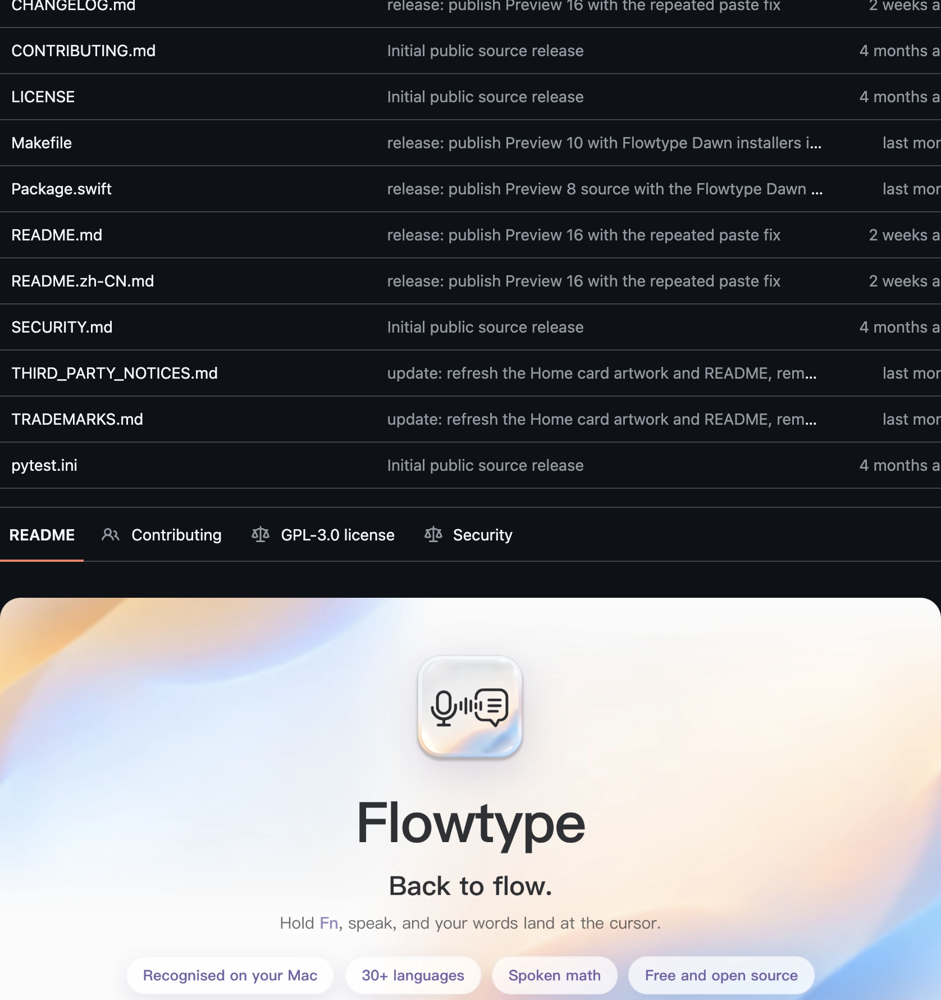
Flowtype · built alone
1,000,000+
words dictated with it, by me
10 colleagues switched from a paid tool
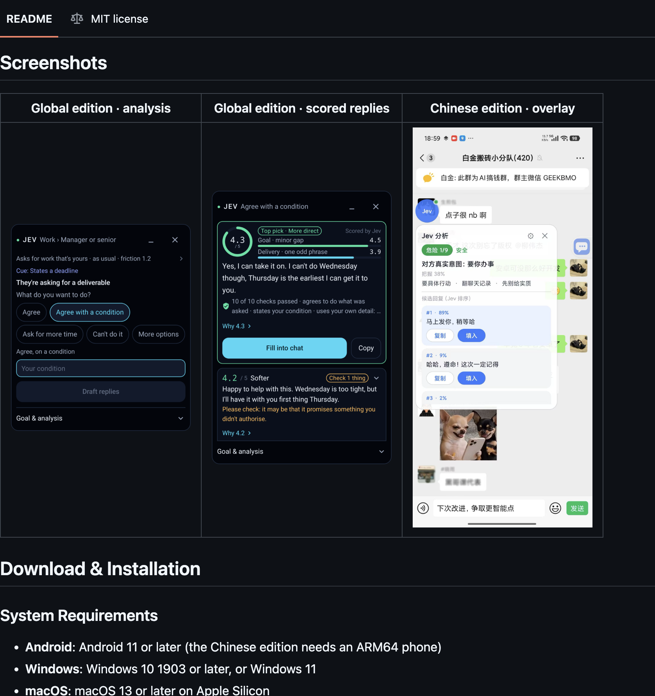
jev-chat · co-creator
8,400+
stars on GitHub
overseas version live in 11 days
my track record
Bayflow Lab's agent
Running on real WhatsApp today
Built by the same founder, with AI agents
Why me (2): I know these companies from the inside.
Sheng Gao · Founder
Where the first customers come from
My family's factory
the first pilot: real quotes and approvals, first-hand
My own network
friends who run export businesses, or whose families do, in Shenzhen
Direct outreach
visiting companies in Shenzhen and Hong Kong in person
Solo founder, building with AI agents
12 months, HK$150,000: build the full product, then prove it with three pilots.
TODAY
Built, running on real WhatsApp
First design partner: my family's company (a related party)
MONTHS 1–6HK$75,000
Version 1.0 of the complete product
Design partner uses it daily, 4 weeks
MONTHS 7–12HK$75,000
3 pilots, at least 2 unrelated
1 paid contract
20 interviews
Year 3: ≈120 paying companies
- Company registered in Hong Kong within 2 weeks of approval
- An office in HSITP within 2 months
- Full-time in Hong Kong from June 2027
Appendix · Five levels, each one earned by trust.
The company's entry to AI
with trust, data and the playbook in place, on to other parts of the company
↑ earned when the whole flow's data and playbook are there, and the owner trusts it
One flow
marketing, sales and deal documents connected; one entry for the whole team
↑ earned when the sales side really earns the owner more money
Gets better with use
what the best people do becomes how the whole company works
↑ earned when what the owner approves, what the best salesperson edits, and every outcome are recorded
Does it for you
replies and quotes inside the authorised range; beyond it, asks the owner
↑ earned when the price list and the approval ranges are handed to it
Tool
helps one person do one action
Appendix · The marketing agent, in eight steps.
Concept
The owner says what he wants
in plain words; a few reference images are enough
The agent proposes a few directions
a 70-point version: right for export, good enough to use
References: hits on each platform, category templates, the company's past winners
The owner picks one
everyone edits the same thing, no guessing
Not happy? The agent asks what is wrong, then proposes again
The content person improves it
in the marketing workspace, from 70 points to ready to post
Images, posters, launch videos, presenter videos
The agent suggests how to post
which platform, when, with what caption
Posted: buyers see it, enquiries come in
cannot rely on paid traffic every time
Enquiries go to the sales agent: reply, quote, close
Attribution
what brought enquiries and orders, and whether the next product can copy it
Deal outcomes come back here, also when a post gets no traction
Kept
what worked becomes examples and templates; what did not is dropped
Feeds step 2: the next directions are more accurate
the person who decidesthe content personthe agentoutside: buyers and platforms
Appendix · Three-year financial projection.
Estimates
| HK$ | Year 1 | Year 2 | Year 3 |
|---|---|---|---|
| Paying companies at year end | 1 | 30 | 120 |
| Subscription revenue in the year | ≈10,000 | ≈400,000 | ≈1,950,000 |
| Annualised subscription revenue at year end | ≈26,000 | ≈780,000 | ≈3,100,000 |
| Running cost of serving customers | minimal | ≈60,000 | ≈300,000 |
| Operating costs | 150,000 | ≈450,000 | ≈900,000 |
| Result for the year | ≈ −140,000 | ≈ −110,000 | ≈ +750,000 |
| Funded by | SPIN grant, HK$150,000 | Revenue and second-year funding | Revenue |
- Revenue: about HK$26,000 per company a year, counted on the average number of paying companies in each year (about 15 in year 2, about 75 in year 3). Subscription only; onboarding and custom work are not counted.
- Running cost: about HK$4,000 per company a year for model usage and servers, the upper end of today's estimate. Gross margin about 85%.
- Operating costs: year 1 is the milestone budget. Years 2 and 3 cover the office, servers and AI tools, company secretary and audit, marketing, and the founder's living costs.